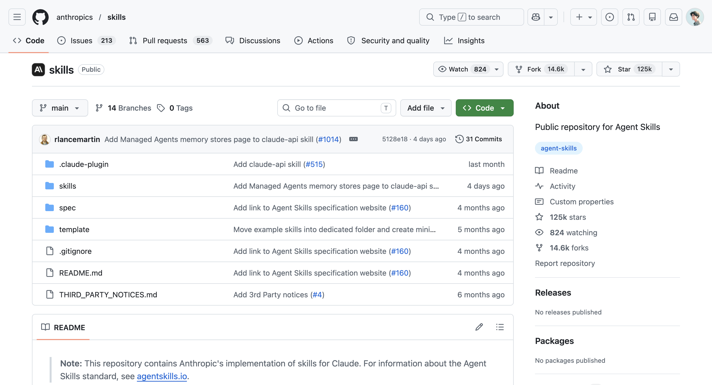

從基本概念開始，一步步掌握版本控制與雲端協作
從建立 Repo 到合併分支，學會存檔、嘗試、安心倒帶
用 Claude Code 做 Vibe Coding 時，你一定遇過這種情況：好不容易把功能調到滿意了，結果下一輪對話就不小心改壞了什麼，卻怎麼也回不到剛才正常的狀態。
這時候你可能會想，如果有一個「時光機」，能讓我隨時回到任何一個正常運作的版本就好了。這個時光機，就是 Git。
對 Vibe Coder 來說，學 Git 最大的好處是：你可以放心地讓 Claude Code 去嘗試各種改動，因為你知道任何時候都能「倒帶」回安全的版本。下面先認識四個最核心的名詞，後面所有章節都會回來用到它們。
Repository（簡稱 Repo）就是被 Git 管理的專案資料夾。當你在一個資料夾裡執行 git init，這個資料夾就變成了一個 Repo，從這一刻起，Git 就會開始追蹤裡面所有檔案的變動。
「幫我在這個專案資料夾建立 Git」
→ Claude Code 會執行 git init，把資料夾變成 Repo
Commit 是 Git 裡最核心的動作，就是把目前的改動儲存成一個紀錄點。每次 commit，Git 都會把專案當下的狀態記下來，附上你寫的說明訊息和時間戳記，未來隨時可以回到這個紀錄點，從這裡重新再往下做。
「這個功能做好了，幫我儲存進度」
→ Claude Code 會把改動加進暫存區（git add，像把要存的東西先放進購物車），再建立一個 commit 完成存檔
有了 commit 之後，搭配下面這幾句對話就能輕鬆檢查改動、查看歷史、還原狀態：
「幫我看一下從上次存檔之後，我改了哪些東西」
「列出最近幾次的存檔紀錄，我想看看這幾天做了什麼」
「我剛才改壞了首頁的樣式，幫我把首頁的樣式檔案還原到上一次存檔的版本」
「我好像把整個專案搞亂了，幫我還原到今天早上的狀態」
Branch（分支）讓你從主線上分岔出一條路徑，可以在上面做實驗或開發新功能，而不影響主線的穩定版本。等嘗試完成沒問題後，再合併回主線。
分支的細節（什麼時候開、怎麼命名、怎麼合併）會留到 Section 03、04 展開。
Git 的操作都是在你自己的電腦上進行的，這就是「本地端」（Local）。GitHub 這類平台則是「遠端」（Remote），讓你可以把專案備份到雲端、跟別人協作，或者純粹當作異地備份。
知道 Commit 是什麼之後，接下來聊一個很容易被忽略，但其實很重要的事：commit 訊息要怎麼寫。
Conventional Commits 是一種被廣泛採用的 commit 訊息格式，做法是在訊息前面加上一個「類型」標籤，讓每筆紀錄的意圖一目了然：
feat 是新功能、fix 是修 Bug、style 是樣式調整、docs 是文件更新、refactor 是重構程式碼。光看前綴就能快速掃過歷史紀錄，知道每次改動的性質。
「幫我用 Conventional Commits 格式儲存」
→ Claude Code 會自動分析改動內容，產出合適的訊息，你再檢查一下訊息有沒有表達正確的意思就好
不過，每次都要口頭提醒 Claude Code 用什麼格式，感覺不是很聰明。我們可以把這種每次都要重複講的偏好設定，寫進 CLAUDE.md 裡。
CLAUDE.md 是放在專案根目錄的設定檔，Claude Code 每次啟動時都會自動讀取。可以把它想成是給 Claude Code 的「工作說明書」，commit 訊息要用什麼格式、協作方式等，都可以寫在裡面當作 Claude Code 的指引。
當你的專案已經有一個穩定運作的版本，這時候想加新功能，你會怎麼做呢？
直接在原本的程式碼上改，當然可以。但如果改到一半發現方向不對，或者改壞了其他功能，要回頭就會比較麻煩。分支（Branch）就是為了解決這個問題而存在的。
因此在 Git 預設的主分支（main）上，我們應該永遠保持可以正常運作的版本，新功能的開發或嘗試都在分支上進行。這樣一來，就能放心地在分支上大膽嘗試各種想法，不用擔心會影響到 main 上已經穩定的成果。
「我想試試看把整個配色換掉，但不確定效果好不好，幫我開一個新的分支來嘗試」
功能分支的生命週期：從 main 分出去 → 開發 → 合併回來。
搭配 Claude Code，整個流程只需要幾句對話就能完成：
一個簡單的判斷方式是，如果這次的改動可能會影響到目前正常運作的功能，就值得開一條分支。像是調整一下按鈕顏色、改個文案，這種小改動直接在 main 上做就好；但如果要加一整個新功能、重新設計介面的樣式，那就值得另開分支來做。
最好的分支命名方式，就是能讓人一眼就知道「這條分支在做什麼」。常見的命名慣例是用 前綴/描述 的格式：
| 前綴 | 用途 | 範例 |
|---|---|---|
feature/ |
新增一個功能 | feature/dark-mode |
fix/ |
修復某個問題 | fix/login-button-crash |
hotfix/ |
緊急修復（線上出事了！） | hotfix/payment-error |
design/ |
設計相關的調整 | design/new-landing-page |
refactor/ |
重構（功能不變，但結構更好） | refactor/simplify-nav |
experiment/ |
試驗性的想法 | experiment/ai-chatbot |
feature/user-profile-page
fix/image-not-loading
design/homepage-redesign
用英文小寫、連字號分隔、簡潔且具描述性
New_Branch
test123
brian的修改
避免中文、空格、大寫混用、沒有意義的名字
「我想加一個深色模式，幫我開一條新的分支來做」
→ Claude Code 會建立 feature/dark-mode 並切換過去
有時候你正在分支上做深色模式，做到一半突然發現首頁有個 Bug 想立刻處理。但深色模式還沒做完，你也不想 commit 一個半成品。這時候就可以用 stash（暫存）。
它會把你目前做到一半的改動先收起來，讓你乾淨地切換到別的分支；等忙完了，再把暫存的東西拿回來繼續做。
「先幫我將目前的進度暫存起來，我要切換到另一個分支」
「幫我切回剛才的分支，把暫存的東西拿回來」
當你在分支上完成了一個功能、確認沒問題之後，就可以把它合併（Merge）回 main 分支。常見的合併方式有兩種：
這是最直覺的合併方式。就像兩條路在交叉口匯合，Git 會保留完整的分支痕跡，讓你清楚看到這些改動是從哪個分支來的。
大部分情況下用 Merge 就夠了。它的好處是歷史紀錄完整，未來回頭看時，能清楚知道每個功能是怎麼分開開發、又在什麼時候合併的。
如果你在開發過程中留下了很多瑣碎的小 commit，像是修了一個 typo、調整一下間距等，用 Squash and Merge 可以把這些全部壓縮成一個 commit 再合併。
如此最終在 main 上，只會看到一筆乾淨的紀錄，例如「feat: 新增深色模式」，而不是十幾筆零碎的小改動。
「我想把 feature/dark-mode 合併回 main，但我在開發過程中有很多小 commit，幫我壓成一個」
→ Claude Code 就會用 squash merge 來處理
合併的時候，有時可能會遇到一個狀況：你在 main 規劃好導覽列的樣式後，但後來在其他分支也動到導覽列的設計。此時若要將分支合併回 main，Git 就會發現同一個地方有兩個不同的版本，它不確定你要用哪一個，這就是 合併衝突（Conflict）。
衝突不是壞事，這是 Git 幫你把關的一環。
「幫我把 feature/dark-mode 合併回 main」
→ 如果合併過程中遇到衝突，Claude Code 會主動列出衝突的檔案和位置，解釋兩邊各改了什麼，然後問你想保留哪個版本
值得注意的是，分支在合併後並不會自動消失。雖然 Git 會標示哪些分支已經合併，但隨著功能越做越多，分支清單還是會越來越長、看起來越來越雜。
因此可以在合併完成後順手刪除用完的分支。刪除分支後並不會遺失任何資料，被刪掉的只是「分支名稱」這個書籤，分支上做過的每一次 commit 都已經寫進 main 的歷史裡，未來想翻回當時的狀態，用 git log 找到那個 commit 隨時都可以回去。
在 Vibe Coding 的過程中，專案很可能會用到第三方服務的 API 金鑰或密碼，這些機密資訊通常會存在一個叫 .env 的檔案裡。
而 .gitignore 就是用來防止這件事的。它是一份告訴 Git「請忽略這些檔案」的清單，只要把 .env 加進去，Git 就不會追蹤它。
「幫我建立一個 .gitignore，確保 .env 不會被追蹤」
→ Claude Code 會根據你的專案類型，自動加入該忽略的系統暫存檔或套件資料夾
如果不確定 .env 有沒有被保護到，有兩種方式可以確認：
.env 有在 .gitignore 裡面嗎？」.gitignore 是放在專案根目錄的純文字檔，可以用任何文字編輯器打開，只要裡面有一行寫著 .env 就安全了。建議的習慣是把「設定 .gitignore」當作每個新專案的起手式：
「幫我初始化 Git，建立 .gitignore，然後做第一次存檔」
從本機到雲端，學會備份、分享與協作
在 Part 1 裡，我們認識了 Git，那台幫專案做版本控制的「時光機」。透過 commit 跟分支，我們能在 Vibe Coding 的過程中放心嘗試各種想法，就算改壞了也能隨時回到完好的版本。
不過 Git 有個小限制：它的資料只儲存在自己的電腦裡。如果想把專案分享給朋友看看、或是拿別人分享的工具來用，光靠 Git 是還不夠的。這時候，我們就會需要一個「雲端」的橋樑，把 Git 所管理的專案推到網路上。
而這個角色，就是 GitHub。
GitHub 不只是 Git 的雲端版本，它同時也是全世界最大的開源社群。對 Vibe Coder 來說，GitHub 既能讓自己的專案有雲端備份、跨裝置同步、跟人協作，也是一座可以盡情挖掘的寶藏，許多實用的工具與 Skill 都能在這裡找到。
在 GitHub 上，每一個專案都會放在一個叫做 Repository（簡稱 Repo）的地方。你可以把它想成一個雲端的專案資料夾，裡面除了裝著專案的所有檔案，還記錄著這份專案從第一個 commit 到現在的完整版本歷史。
換句話說，它跟你電腦上那個被 Git 管理的資料夾是「對應的」，只是一個在本地、一個在雲端。
以 Anthropic 的 skills repo 為例，一個 Repo 頁面上常見的元素有這幾個：

檔案列表（中間主區）：GitHub 會把專案裡所有的檔案與資料夾直接呈現在網頁上，不用下載也能線上瀏覽。
README.md（檔案列表下方）：專案的說明書，告訴造訪者這個專案是什麼、怎麼用。
Star（右上角）：類似於社群上的「按讚」，數字越高通常代表越多人覺得它值得參考。
Issues（上方 tab）：回報 Bug 或提出建議的地方，有點像專案專屬的討論區。
Pull requests（上方 tab）：其他人想把改動合併進來的請求，也就是後面會聊到的 PR。
理解了 Repo 是什麼後，接下來我們就能進一步去認識電腦上的 Git，要怎麼跟 GitHub 上的 Repo 互通有無。
當專案同時存在於本地與雲端時，它們之間就需要一套溝通方式，讓兩邊隨時保持同步。GitHub 上最常用到的三個動作，就是 Push、Pull、Clone。
push：把本地的改動推到雲端pull：把雲端最新版本拉回本地clone：第一次將整個專案複製下來當我們在電腦上完成修改、並用 commit 存好進度後，這些變更都還只儲存在電腦裡。如果想讓 GitHub 也有這份檔案，就需要透過 push（推送），把專案從本地「推」上雲端的 Repo。
對 Vibe Coder 來說，Push 最大的好處有兩個：一是買個保險做雲端備份，不用怕電腦出狀況讓心血泡湯；二是方便分享，不管是要給朋友看，還是開源讓大家下載，都可以透過 push 來讓大家瀏覽專案成果。
「這是我在 GitHub 上建立的 Repo 網址 [貼上網址]，請幫我把目前的本地專案推上去」
「幫我把目前的進度推到 GitHub 上」
反過來說，如果你換了一台裝置想繼續開發、或在 GitHub 上編輯了某個檔案，那此時電腦上的版本就不是最新的了。這時候就需要 pull，把 GitHub 上最新的改動「拉」回本地，讓兩邊重新對齊。
像是平常在桌機上開發、週末想換筆電繼續做一點，只要先在筆電上 pull 一下，就能接著桌機的進度往下做。
「拉一下 GitHub 上最新的版本」
→ Claude Code 會把雲端最新的 commit 抓下來合併到本地，讓本地專案也同步到最新狀態
前面兩個動作是針對「自己手上的專案」做同步，而 clone 則是用在當你在 GitHub 上看到一個想用或想參考的專案時。它會把這個專案裡的所有檔案，連同完整的版本歷史一起複製過來。
複製完之後，電腦上就會有一份能直接用 Git 管理的本地專案副本，可以開啟、編輯，也可以接著往下開發與調整。
「把這個 GitHub 上的專案 [貼上網址] clone 到我的電腦」
簡單回顧一下這三個操作：
Push：把本地的改動推到雲端（電腦 → GitHub）
Pull：把雲端的最新版本拉回本地（GitHub → 電腦）
Clone：把整個專案完整複製下來，包含所有版本歷史
在這三個動作裡，最值得帶進日常開發的，是 Commit 與 Push 這組雙層備份的操作：每完成一個小修改就先 commit 起來，把進度存在本地；當功能告一段落、或完成大項目的開發時，再 push 到 GitHub 做雲端備份。
「commit 目前的進度」
「把目前的進度 push 到 GitHub 上」
到這裡，我們已經知道可以透過 push 與 pull 讓本地跟雲端同步，並用 clone 把公開的專案複製下來。但 GitHub 上還有一個更有趣的操作，那就是 Fork（分叉）。
兩個動作都是「複製別人的專案」，但複製的「位置」跟「關係」完全不同。舉個情境來說明：你在 GitHub 上看到一個很實用的 Skill，想拿來用用看的時候：
Fork 的特別之處，在於會跟原版保持「上下游」的連結。你的 fork 是「下游」，原作者的 Repo 是「上游」。
這個連結最大的好處是：你可以在自己的 fork 裡自由調整，而當原版有了新功能或 Bug 修正時，可以選擇把這些更新「同步」回你的 fork，讓你的版本既保留客製化內容，又能跟著原版一起進化。
不過，看到這裡可能會想說：在同步原版的更新時，自己所做的調整會不會被覆蓋掉呢？
大多數情況下，是不會的。當我們把原版的最新版本同步到自己的 fork 時，Git 會自動進行「合併（Merge）」，把原版的新改動跟你自己的修改整合在一起，而不是用原版去覆蓋你的內容。
只有一種情況需要你手動介入：當你跟原作者改到了「同一個檔案的同一段內容」時，那麼 Git 就會跟你說「這裡有衝突，請選擇要保留哪個版本」，這就是在 Part 1 裡談過的衝突（Conflict）。
對 Vibe Coder 來說，Fork 最常出現在這幾個情境：
客製化別人的 Skill：看到一個很實用的 Skill，但想根據自己的工作習慣調整。這時候 fork 一份回來，就能自由修改成自己的版本，而不會動到原作者的東西。
延伸開源的專案：在 GitHub 上看到一個有趣的小工具或範本，想拿來改成自己的版本時，那麼就可以透過 Fork 來在自己的帳號下持續開發，未來也能跟原版同步更新。
保留學習用的副本：想研究別人的專案是怎麼寫的，Fork 一份在自己帳號下，就能放心地拆解、實驗、嘗試各種改法。
操作上也很簡單，在 GitHub 的 Repo 頁面右上角會有一個「Fork」按鈕，點下去之後，你的帳號底下就會多出一個一模一樣的 Repo，下方會標注「forked from xxx」，告訴我們這是從哪裡分叉出來的。
介紹完 Fork，GitHub 上還有一個值得認識的功能是 Pull Request（簡稱 PR）。
雖然這名稱看起來有點不直覺又繞口，但概念其實很單純：當我們在 fork 裡做了調整，若有嘗試出更好的方法或修掉某個 Bug，此時就可以透過 PR 請原作者把你所做的優化「拉（pull）」進他的 Repo 裡。
一個 PR 通常會包含幾個關鍵資訊：
標題與說明：改了什麼、為什麼這樣改
改動的內容：GitHub 會把改了哪些檔案、新增或調整了哪些段落都列出來，方便原作者查看
討論區：原作者跟其他人可以在這裡留言、提問或給建議
值得注意的是，PR 通常不是「丟出去就結束」。它更像是一場對話，原作者可能會說「這邊可以再調整一下」，你就回去修改、再更新 PR。直到最後都調整好時，才會正式合併進原版。
當原作者審閱完 PR、覺得改得不錯按下「Merge」之後，你的改動就正式進到了原版的 Repo 裡，同時你的名字也會出現在 Contributors 名單上。
這也正是在逛 GitHub 時，在 Repo 頁面上會看到的 Contributors 名單，這些人正是靠著「主動貢獻」成為其中一員的。其實每個人都能透過 Fork → 修改 → PR 的流程，成為某個專案的 Contributor。